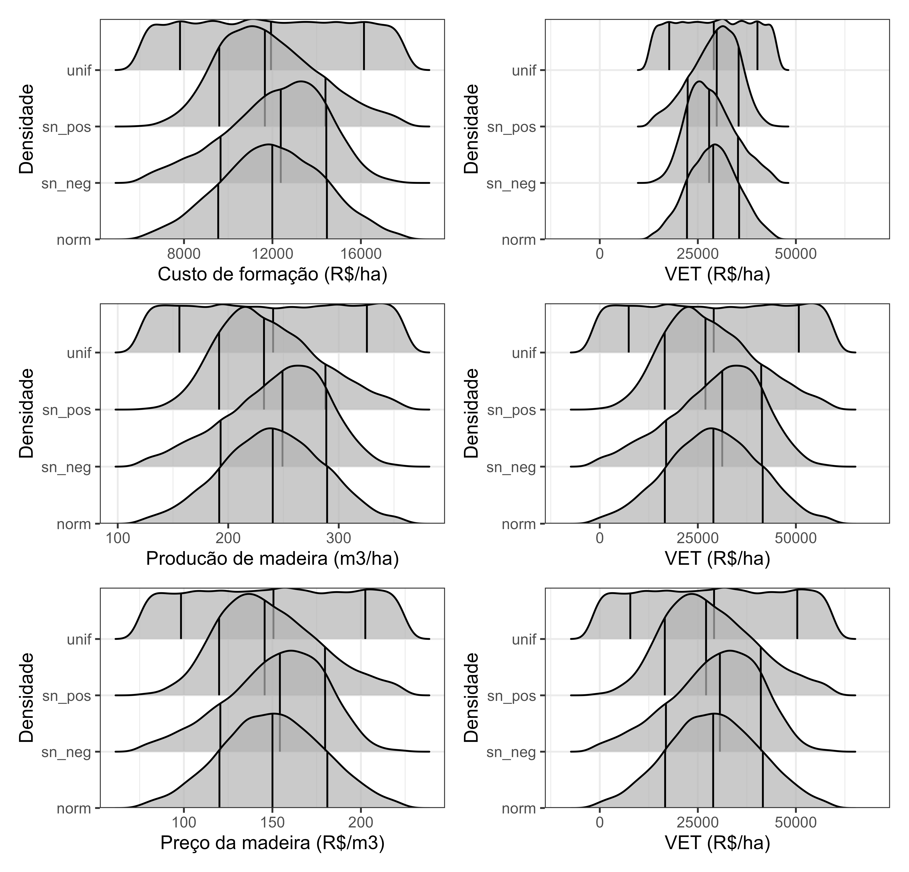

Efeito da incerteza de uma variável de estado no VET
incerteza_uma_variavel.Rmd
library(vet)
library(dplyr)
#>
#> Attaching package: 'dplyr'
#> The following objects are masked from 'package:stats':
#>
#> filter, lag
#> The following objects are masked from 'package:base':
#>
#> intersect, setdiff, setequal, union
library(tidyr)
library(ggridges)
library(ggplot2)
library(patchwork)
CUSTO = 12000
lst_param_custo <- list(
min = CUSTO * 0.5,
max = CUSTO * 1.5,
mean = CUSTO,
sd = CUSTO * 0.2,
skew = 0.7
)
PRODUCAO = 240
lst_param_producao <- list(
min = PRODUCAO * 0.5,
max = PRODUCAO * 1.5,
mean = PRODUCAO,
sd = PRODUCAO * 0.2,
skew = 0.7
)
PRECO = 150
lst_param_preco <- list(
min = PRECO * 0.5,
max = PRECO * 1.5,
mean = PRECO,
sd = PRECO * 0.2,
skew = 0.7
)
# tab_amostra_independente |>
# filter(cd_var == "custo") |>
# select(cd_distribuicao, vl_amostra) |>
# mutate(
# vet = vet(
# preco_madeira = lst_param_preco$mean,
# taxa = 0.08, rotacao = 6,
# vp_custo = vl_amostra,
# producao = lst_param_producao$mean
# )
# ) |>
# gather('nm_key', 'vl_key', -cd_distribuicao) |>
# ggplot(aes(vl_key)) +
# geom_density() +
# facet_grid(cd_distribuicao~nm_key, scales = "free_x") +
# theme_bw()
vec_aux_limits <- c(-10000, 70000)
tab_vet_custo <- tab_amostra_independente |>
filter(cd_var == "custo") |>
select(cd_distribuicao, custo = vl_amostra) |>
mutate(
vet = vet(
preco_madeira = lst_param_preco$mean,
taxa = 0.08, rotacao = 6,
vp_custo = custo,
producao = lst_param_producao$mean
)
)
plt_ridge_custo_dist <- tab_vet_custo |>
ggplot(aes(custo, cd_distribuicao)) +
stat_density_ridges(quantile_lines = TRUE, quantiles = c(0.15, 0.5, 0.85), alpha = 0.7) +
labs(x = "Custo de formação (R$/ha)", y = "Densidade") +
scale_y_discrete(expand = c(0, 0)) +
theme_bw()
plt_ridge_custo_vet_dist <- tab_vet_custo |>
ggplot(aes(vet, cd_distribuicao)) +
stat_density_ridges(quantile_lines = TRUE, quantiles = c(0.15, 0.5, 0.85), alpha = 0.7) +
labs(x = "VET (R$/ha)", y = "Densidade") +
scale_x_continuous(limits = vec_aux_limits) +
scale_y_discrete(expand = c(0, 0)) +
theme_bw()
plt_ridge_custo_dist + plt_ridge_custo_vet_dist
#> Picking joint bandwidth of 365
#> Warning: Using the `size` aesthetic with geom_segment was deprecated in ggplot2 3.4.0.
#> ℹ Please use the `linewidth` aesthetic instead.
#> This warning is displayed once every 8 hours.
#> Call `lifecycle::last_lifecycle_warnings()` to see where this warning was
#> generated.
#> Picking joint bandwidth of 988
tab_vet_producao <- tab_amostra_independente |>
filter(cd_var == "producao") |>
select(cd_distribuicao, producao = vl_amostra) |>
mutate(
vet = vet(
preco_madeira = lst_param_preco$mean,
taxa = 0.08, rotacao = 6,
vp_custo = lst_param_custo$mean,
producao = producao
)
)
plt_ridge_producao_dist <- tab_vet_producao |>
ggplot(aes(producao, cd_distribuicao)) +
stat_density_ridges(quantile_lines = TRUE, quantiles = c(0.15, 0.5, 0.85), alpha = 0.7) +
labs(x = "Producão de madeira (m3/ha)", y = "Densidade") +
scale_y_discrete(expand = c(0, 0)) +
theme_bw()
plt_ridge_producao_vet_dist <- tab_vet_producao |>
ggplot(aes(vet, cd_distribuicao)) +
stat_density_ridges(quantile_lines = TRUE, quantiles = c(0.15, 0.5, 0.85), alpha = 0.7) +
labs(x = "VET (R$/ha)", y = "Densidade") +
scale_x_continuous(limits = vec_aux_limits) +
scale_y_discrete(expand = c(0, 0)) +
theme_bw()
plt_ridge_producao_dist + plt_ridge_producao_vet_dist
#> Picking joint bandwidth of 7.33
#> Picking joint bandwidth of 1870
tab_vet_preco <- tab_amostra_independente |>
filter(cd_var == "preco") |>
select(cd_distribuicao, preco = vl_amostra) |>
mutate(
vet = vet(
taxa = 0.08, rotacao = 6,
vp_custo = lst_param_custo$mean,
producao = lst_param_producao$mean,
preco_madeira = preco
)
)
plt_ridge_preco_dist <- tab_vet_preco |>
ggplot(aes(preco, cd_distribuicao)) +
stat_density_ridges(quantile_lines = TRUE, quantiles = c(0.15, 0.5, 0.85), alpha = 0.7) +
labs(x = "Preço da madeira (R$/m3)", y = "Densidade") +
scale_y_discrete(expand = c(0, 0)) +
theme_bw()
plt_ridge_preco_vet_dist <- tab_vet_preco |>
ggplot(aes(vet, cd_distribuicao)) +
stat_density_ridges(quantile_lines = TRUE, quantiles = c(0.15, 0.5, 0.85), alpha = 0.7) +
labs(x = "VET (R$/ha)", y = "Densidade") +
scale_x_continuous(limits = vec_aux_limits) +
scale_y_discrete(expand = c(0, 0)) +
theme_bw()
plt_ridge_preco_dist + plt_ridge_preco_vet_dist
#> Picking joint bandwidth of 4.55
#> Picking joint bandwidth of 1860
(plt_ridge_custo_dist + plt_ridge_custo_vet_dist) /
(plt_ridge_producao_dist + plt_ridge_producao_vet_dist) /
(plt_ridge_preco_dist + plt_ridge_preco_vet_dist)
#> Picking joint bandwidth of 365
#> Picking joint bandwidth of 988
#> Picking joint bandwidth of 7.33
#> Picking joint bandwidth of 1870
#> Picking joint bandwidth of 4.55
#> Picking joint bandwidth of 1860